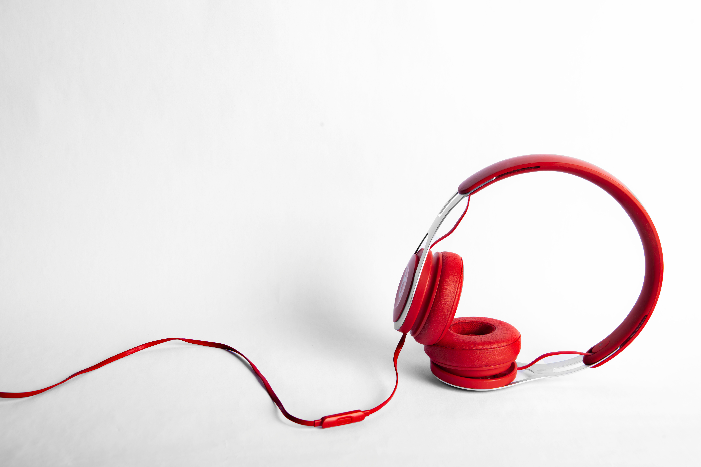
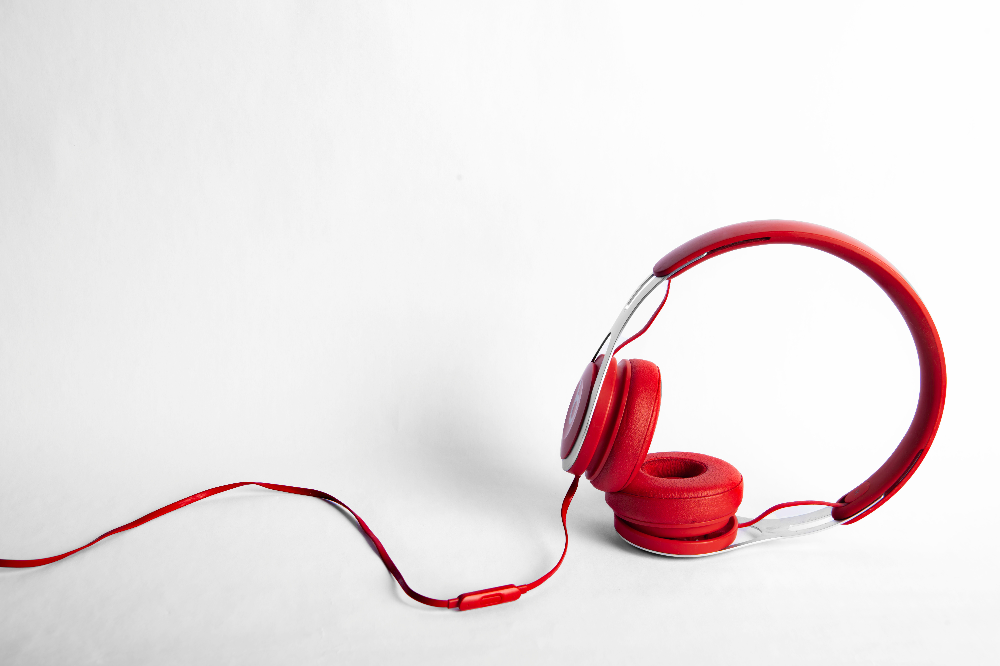

Our New products..

 



Our History on headphones
If you are reading this on a computer, there is an excellent chance that you are wearing, or within arm's reach of, a pair of headphones or earbuds.
To visit a modern office place is to walk into a room with a dozen songs playing simultaneously but to hear none of them. Up to half of younger workers listen to music on their headphones, and the vast majority thinks it makes us better at our jobs. In survey after survey, we report with confidence that music makes us happier, better at concentrating, and more productive.
Science says we're full of it. Listening to music hurts our ability to recall other stimuli, and any pop song -- loud or soft -- reduces overall performance for both extraverts and introverts. A Taiwanese study linked music with lyrics to lower scores on concentration tests for college students, and other research have shown music with words scrambles our brains' verbal-processing skills. "As silence had the best overall performance it would still be advisable that people work in silence," one report dryly concluded.
If headphones are so bad for productivity, why do so many people at work have headphones?
1910, the Radio Division of the U.S. Navy received a freak letter from Salt Lake City written in purple ink on blue-and-pink paper. Whoever opened the envelope probably wasn't expecting to read the next Thomas Edison. But the invention contained within represented the apotheosis of one of Edison's more famous, and incomplete, discoveries: the creation of sound from electrical signals.
The purpose of the headphone is to concentrate a quiet and private sound in the ear of the listener. This is a radical departure from music's social purpose in history. "Music together with dance co-evolved biologically and culturally to serve as a technology of social bonding," Nils L. Wallin and Björn Merker wrote in The Origins of Music. Songs don't leave behind fossils, but evidence of musical notation dates back to at least Sumeria. In 1995, archaeologists discovered a bone flute in southern Europe estimated to be 44,000 years old.